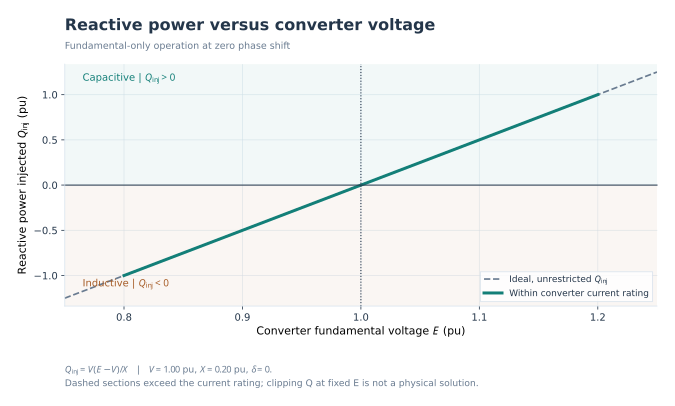
Reactive Power Vs E
How converter voltage magnitude determines injected reactive power.
Editable vector figures derived from a lossless fundamental phasor model and an educational averaged PI control surrogate. Not EMT, harmonic, or switching simulation. Positive injected Q means capacitive support; current points from converter to PCC. Independent of the schematic drawing engine.
See docs/operation.md for exact sign conventions, equations and limits.
All figures are generated by python -m facts_statcom.operation --all.

How converter voltage magnitude determines injected reactive power.
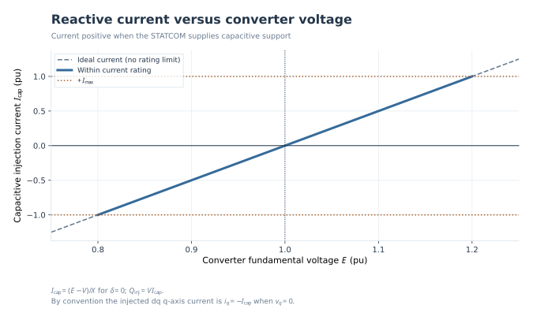
Relation between converter voltage and capacitive injected current.
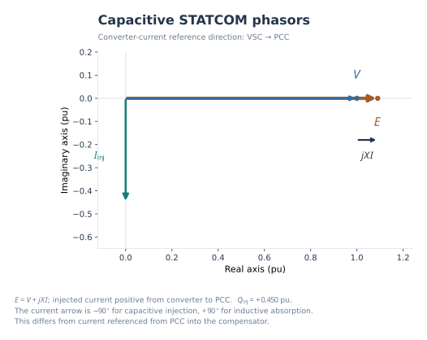
VSC-to-PCC current direction for capacitive operation.
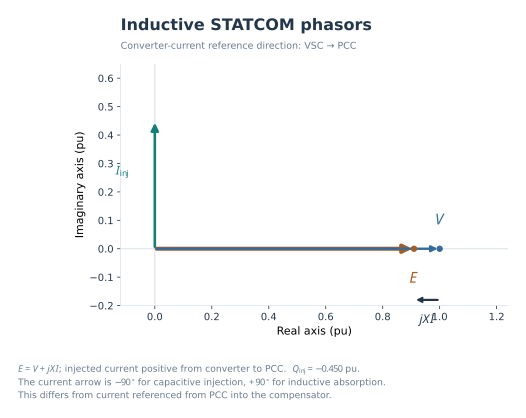
Phasor reversal when the STATCOM absorbs reactive power.
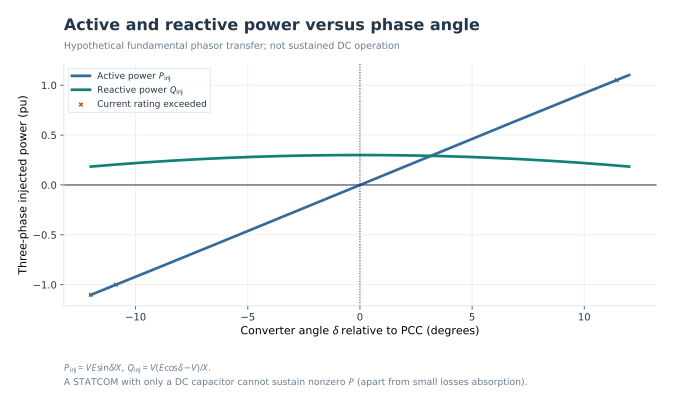
Illustrative active and reactive power dependence on phase angle.
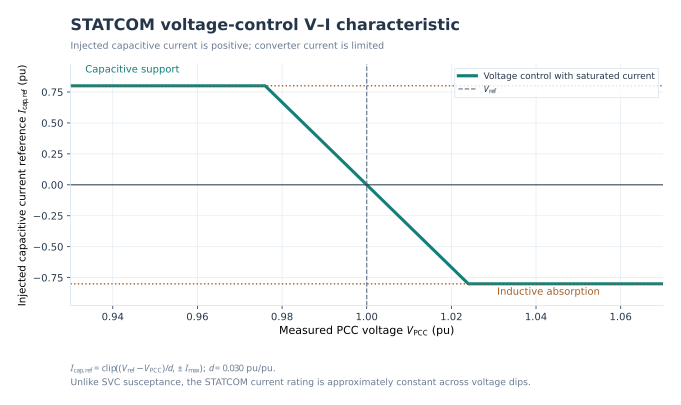
Voltage-regulation droop slope and converter current saturation.
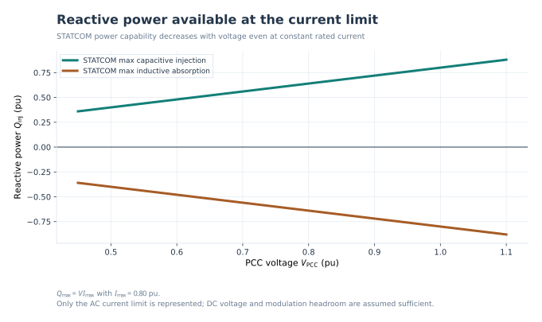
Why constant rated reactive current does not mean constant Q.
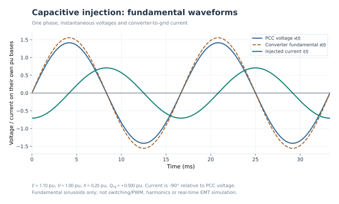
One-phase fundamental voltage and injected current waveforms.
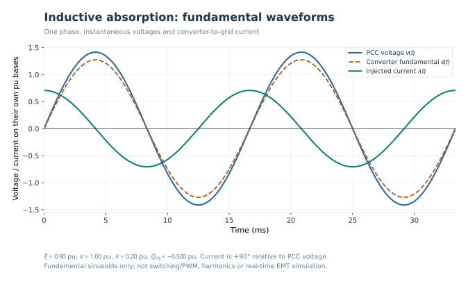
Reversed injected-current quadrature relationship.
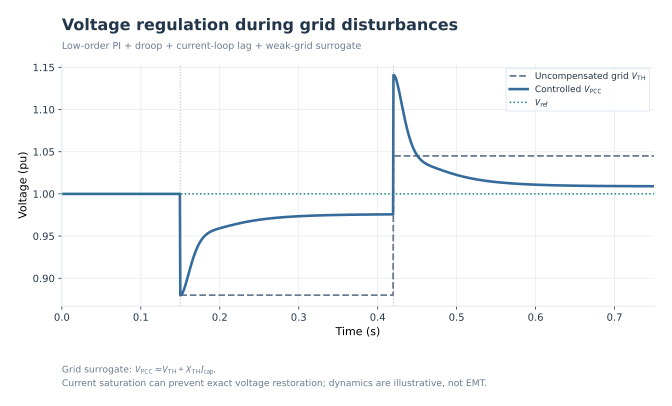
PCC voltage response to grid voltage step changes.
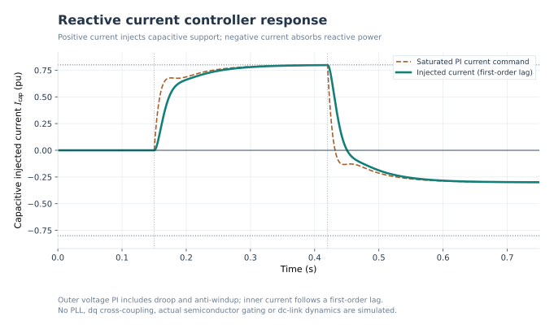
Simplified PI reference and current tracking.
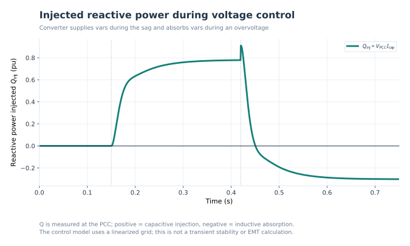
Capacitive injection and inductive absorption during control.
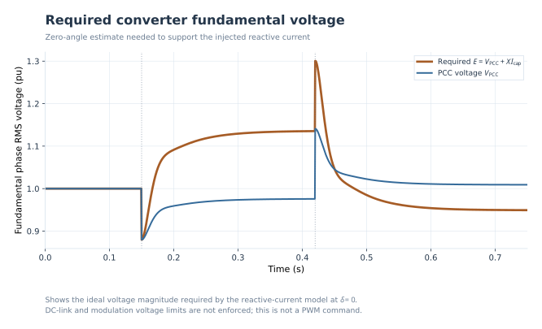
Fundamental converter voltage required by the current model.